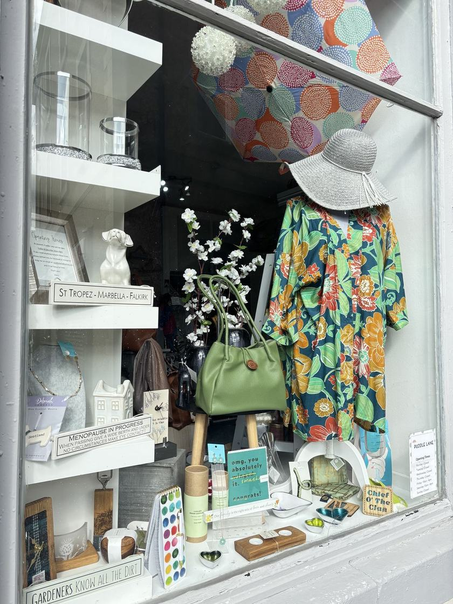
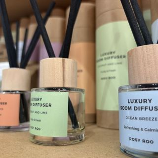
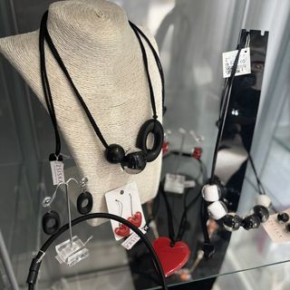
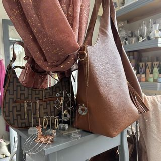
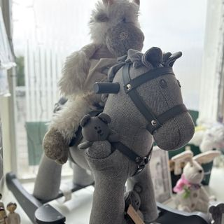
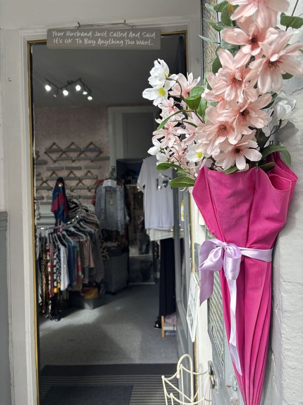
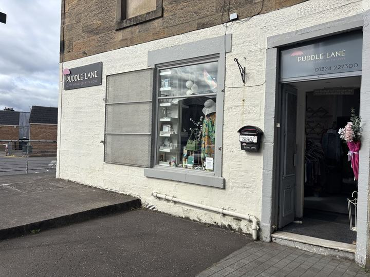

Puddle Lane
Independent gift shop, 109 High Street, Falkirk. Friday and Saturday, 10am to 4pm. Look for the wee brolly.
Through the window
This is what it looked like this week.
It changes every week, and whatever is in the window is usually gone by the next one. Liza's Instagram is the honest way to see what is in right now.
@puddle_lane_falkirk
Who's it for?
Come in with an occasion. Leave with the gift.
Most folk arrive knowing the person and not the present. That is the bit Liza is good at. Pick one and it goes on your tag.
Cards for every occasion
Birthdays, new babies, new homes, thank yous and sympathy. A proper considered range, not a spinner rack of the same six designs.
Candles and home fragrance
Scented candles and fragrance for the house, made in small batches. The sort that come with proper care instructions, because they are worth looking after.

Jewellery and accessories
Rings, beads, scarves and gloves. The wee treat folk buy for themselves just as often as they buy it for somebody else.

Bags and leather goods
Clutches, purses and hand finished leather. The kind of thing that outlasts the occasion it was bought for.

For the little ones
Soft toys, wooden name trains and gifts for new babies and wee ones. The corner of the shop that gets the loudest "aww".
Seasonal and one offs
Stock moves with the season and with whatever catches Liza's eye. If you saw it on the Instagram last week, it is worth asking about.

The bit people remember
"We'll even beautifully wrap them."
That is Liza's own line, and it is why a lot of folk come back. Paper, ribbon and a proper job, done at the counter while you wait. No charge, no upsell, and no apologising for the state of it when you hand it over.

The shop in four lines
- 2018On the High Street since
- 0 reviews100% recommend, on Facebook
- Wrapped freeEvery gift, every time
- Fri & Sat10am to 4pm
Come and say hello
109 High Street, Falkirk.
Right on the High Street near the Wheatsheaf, a couple of minutes on foot from the Howgate and the bus station. Council parking is close by, and free on Sundays and bank holidays.
- Address
- 109 High Street, Falkirk, FK1 1ED
- Phone
- 01324 227300
- puddlelane@yahoo.com
- Hours
- Friday & Saturday, 10am to 4pm

109 High Street, Falkirk. The map loads from CARTO, a mapping service, only when you ask for it.
The shop's day to day
Instagram stays in charge.
New stock, opening hours and everything else goes up on the socials first. This site gives the shop a proper front door, then hands you straight over to what is current.
Reserve it, then come and collect it
No online shop. Just a message and a name on the tag.
Spot something on the Instagram or on the shelves above, send Liza a message, she puts it by the till, you come in on Friday or Saturday and collect it. No card details, no postage, nothing to set up.
A website concept built by Tempany Web Studios for the owner of Puddle Lane to review. Not live, not commissioned. Shop details come from Puddle Lane's own Instagram and Facebook pages; photographs are Puddle Lane's own.